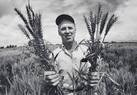

Dr. Norman Borlaug

NORMAN BORLAUG on his field reserch visit
ON HIS 30s
Norman Ernest Borlaug (; March 25, 191 September 12, 2009)[2] was an
American agronomist who led initiatives worldwide that contributed to the extensive
increases in agricultural production termed the Green Revolution. Borlaug was awarded multiple
honors for his work, including the Nobel Peace Prize, the Presidential Medal of Freedom and
the Congressional Gold Medal, one of only seven people to have received all three awards.[3]
Borlaug received his B.S. in forestry in 1937 and PhD in plant pathology and genetics from the Unive
rsity of Minnesota in 1942. He took up an agricultural research position with CIMMYT in Mexico, where he developed semi-dwarf, high-yield, disease-resistant wheat varieties.[4][1] During the mid-20th century, Borlaug led the introduction of these high-yielding varieties combined with modern agricultural production techniques to Mexico, Pakistan, and India. As a result, Mexico became a net exporter of wheat by 1963. Between 1965 and 1970, wheat yields
nearly doubled in Pakistan and India, greatly improving the food security in those nations.[5]
CLICK TO SEE MORE
ON HIS 30s
Norman Ernest Borlaug (; March 25, 191 September 12, 2009)[2] was an American agronomist who led initiatives worldwide that contributed to the extensive increases in agricultural production termed the Green Revolution. Borlaug was awarded multiple honors for his work, including the Nobel Peace Prize, the Presidential Medal of Freedom and the Congressional Gold Medal, one of only seven people to have received all three awards.[3] Borlaug received his B.S. in forestry in 1937 and PhD in plant pathology and genetics from the Unive rsity of Minnesota in 1942. He took up an agricultural research position with CIMMYT in Mexico, where he developed semi-dwarf, high-yield, disease-resistant wheat varieties.[4][1] During the mid-20th century, Borlaug led the introduction of these high-yielding varieties combined with modern agricultural production techniques to Mexico, Pakistan, and India. As a result, Mexico became a net exporter of wheat by 1963. Between 1965 and 1970, wheat yields nearly doubled in Pakistan and India, greatly improving the food security in those nations.[5]